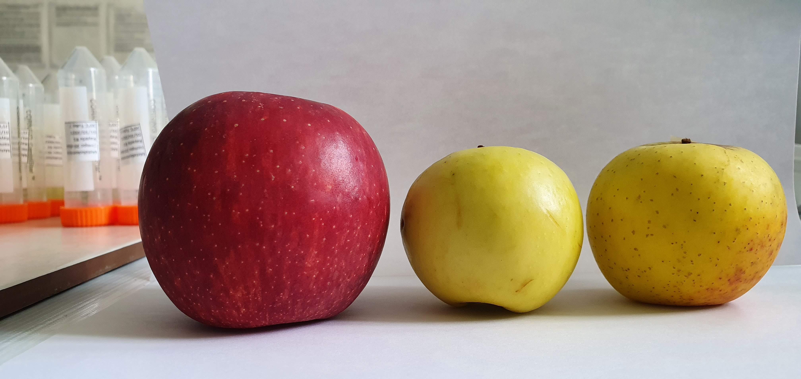

Manzanas con el cambio climatico problemas con plagas
Especies de importancia comercial
Cambio ClimaticoLas áreas destinadas al cultivo han llegado a un límite, su rápida expansión, consecuencia de una tala desmedida de bosques y selvas, ha contribuido al aumento de la temperatura alterando la fenología de plantas y animales. La velocidad con la que ocurre estos cambios no permite que muchas especies sean capaces de adaptarse y, en consecuencia, algunas de estas se están desplazando de sus zonas tradicionales a nuevos “nichos”, donde pueden vivir y reproducirse. Consecuencia de esto los insectos plaga, se desplazan a diferentes hábitats y reconocen en ocasiones, nuevos hospederos. Ejemplo de lo anterior es la Mosca Mexicana de la Fruta Anastrepha ludens, una especie polífaga cuyos hospederos naturales se restringen comúnmente a frutos de mango, diversos cítricos y otras especies de rutáceas e incluso ocasionalmente algunos frutos de plantas de la familia Myrtaceae. En últimos tiempos, se encontró que esta plaga ha iniciado la infestación de frutos de manzano, los cuales, se caracterizan por crecer a mayor altitud además de pertenecen a una familia botánica distinta a las de sus hospederos tradicionales. Debido a la importancia económica de los cultivos de manzanas en las zonas productoras de México y la falta de conocimiento de aquellos mecanismos que a nivel molecular subyacen la plasticidad y la adaptabilidad de esta especie a las condiciones de su entorno promoviendo incluso la interacción con nuevos hospederos, se realiza el siguiente estudio, el cual tiene por objeto analizar el transcriptoma de larvas y pupas de A. ludens desarrolladas en tres cultivares de manzana (Golden Delicious, Criolla y Rayada) y un hospedero natural (toronja cv. Marsh), a diferentes temperaturas. Como resultado se identifican 1,791 genes que en Larvas se expresan diferencialmente en respuesta al estímulo (cambio de temperatura). En las pupas, el número resulto ser similar (1,656 genes expresados diferencialmente). Interesantemente, son pocos los genes (un total de 262) que en ambos estadios de desarrollo (larvas y pupas) se expresan de manera diferencial en respuesta al estimulo y son menos aún, aquellos que coinciden cuando se comparan los genes que en respuesta a dicho tratamiento (el cambio de temperatura) se expresaron cuando las larvas y pupas se encontraban infestando un diferente cultivar (ya sea manzanas de los cv. Golden Delicious, Criolla y Rayada, o toronja cv. Marsh). Aun cuando más análisis son requeridos, de momento se concluye que los genes que se inducen participan de la señalización, la transducción de señales y la respuesta al estimulo ambiental mientras que los genes que se reprimen parecen estar relacionados con reducir la progresión del metabolismo, es decir, reducir el consumo de energía (ATP) para mantener la homeostasis celular y modular el estrés inducido por calor.
Palabras clave: plasticidad, adaptación, cambio climático, transcriptoma, temperatura
La plasticidad adaptativa de los insectos se refiere a la capacidad de estos para ajustar su comportamiento, fisiología y morfología en respuesta a las variaciones ambientales impuestas por el cambio climático. Esta plasticidad permite a los insectos sobrevivir y reproducirse en condiciones que difieren de aquellas a las que están históricamente adaptados.
Ante un escenario de cambio climático y dependiendo de la especie, algunos insectos han comenzado a cambiar sus hábitos de migración o la forma en que interactúan con su entorno (Parmesan et al., 2014). Por ejemplo, realizan la mayoría de sus actividades durante las horas más frescas del día y mantienen una actividad reducida o nula cuando las temperaturas son elevadas (Manfredini et al., 2019). Esto les permite ajustar sus tasas metabólicas y tener una mayor tolerancia al calor y resistencia a la desecación en ambientes más cálidos y secos (Kingsolver & Buckley, 2018). También, en respuesta al aumento de la temperatura, muchas especies de insectos están desplazando su rango de distribución hacia mayores altitudes, lo que puede influir en las interacciones entre especies, como la predación y la competencia (Valladares et al., 2014).
Téngase en cuenta que los cambios en la fenología (el calendario de eventos biológicos) pueden desincronizar las relaciones entre insectos y sus plantas hospedadoras o depredadores. También existe evidencia de que algunas especies, para favorecer temporadas más largas de crecimiento, están modificando sus ciclos de vida, adelantando la emergencia de adultos e incrementando el número de generaciones por año. Cambios en el tamaño corporal, coloración y estructura de las alas también pueden ocurrir como respuesta a diferentes presiones ambientales (Gibert et al., 2019). Sin embargo, algunos de estos cambios podrían tener lugar únicamente a largo plazo, es decir, manteniendo condiciones prolongadas y sostenibles que ejercen una presión selectiva.
Se asume que, a corto plazo, una adaptación rápida tiene lugar gracias a la plasticidad de los insectos (y de otros organismos) para cambiar, mediante una reprogramación celular, las respuestas a las condiciones de su entorno. Así, está plasticidad para adaptarse (incluso fenotípicamente) es dependiente de la escala de tiempo con la que esto ocurre (revisado en (Rodrigues & Beldade, 2020)). Se debe tener en cuenta que no todas las especies de insectos tienen la misma capacidad de respuesta; algunas pueden tener una mayor plasticidad adaptativa influenciada por su historia evolutiva y ecología, mientras que otras tienen limitaciones que restringen su capacidad de adaptación. Así, las especies con menor capacidad de dispersión o con ciclos de vida más específicos pueden estar en mayor riesgo de extinción (Manfredini et al., 2019). El cambio climático puede interactuar con otros factores de estrés, como la pérdida de hábitat y la contaminación, complicando aún más la capacidad de los insectos para adaptarse. Por lo anterior, estudios que permitan identificar los cambios en la expresión de genes que permiten a estos organismos adaptarse a las nuevas condiciones de su entorno son esenciales para elucidar los mecanismos detrás de esta plasticidad y capacidad de adaptación (Hilker et al., 2023).
Nuestro modelo de estudio es la Mosca Mexicana de la Fruta, Anastrepha ludens, una especie polífaga cuyos hospederos naturales se restringen a especies frutícolas como el mango (Mangifera indica, Anacardiaceae), diversos cítricos y otras especies de rutáceas (Citrus × paradisi, Citrus × sinensis, Casimiroa eduli), e incluso, aunque de forma ocasional, también puede encontrarse infestando algunos frutos de plantas de la familia Myrtaceae (p. ej., Psidium guajava). Esta especie, perteneciente a la familia Tephritidae, es endémica del continente americano y, hasta hace algunos años, restringía su hábitat a climas tropicales y subtropicales; sin embargo, en años recientes y seguramente como consecuencia del cambio climático, ha comenzado a desplazarse a zonas de mayor altitud, encontrando nuevos y diferentes nichos donde puede vivir y reproducirse con éxito. Actualmente, y con preferencia sobre ciertos cultivares, esta plaga llega a encontrarse infestando frutos de especies pertenecientes a la familia Rosaceae, principalmente frutos de manzano (Malus domestica, Fig. 1), un cultivo en el que comienza ya a causar importantes mermas en su producción.
Mediante el análisis de nuestro modelo de estudio se busca atender dos áreas de oportunidad de gran relevancia. La primera de ellas tiene que ver con reconocer la problemática que representa el que algunas especies plaga comiencen a colonizar nuevos nichos como consecuencia del cambio climático, parasitando e infestando incluso nuevos hospederos de importancia agrícola e incidiendo de manera negativa en el sector productivo y en la problemática que representa hoy en día garantizar la seguridad alimentaria. La segunda área de oportunidad está relacionada con elucidar los mecanismos moleculares que subyacen a la plasticidad adaptativa en los insectos, un fenómeno poco estudiado en el contexto del evidente cambio climático del que somos presa hoy día. En el caso de A. ludens, resulta de particular interés el que podamos entender no solo cómo esta especie logra sobrevivir y reproducirse en condiciones que difieren de aquellas a las que está históricamente adaptada consecuencia del aumento creciente de la temperatura; también, cómo es que, al colonizar nuevos nichos y como especie “invasora”, consigue infestar nuevos hospederos que distan incluso de ser filogenéticamente cercanos a aquellos considerados sus hospederos naturales (p. ej. aquellos pertenecientes a la familia Rosaceae, Malus, domestica, Pronus persica y Pryrus communis)
Antecedentes Los tefrítidos son una familia diversa de insectos, con más de 4,000 especies descritas. La mayoría de las especies se alimentan de plantas y varias de ellas pueden causar importantes daños económicos, especialmente cuando sus larvas se desarrollan en frutas de gran valor comercial. Diferentes reportes sugieren que especies relacionadas, en especial aquellas que se consideran polífagas, poseen gran plasticidad adaptativa. Por ejemplo, la mosca oriental Bactrocera dorsalis, es una plaga cuya amplia gama de hospederos, su gran tolerancia climática y su fuerte capacidad de dispersión le permitieron colonizar, en el último siglo todo el sudeste asiático desde la India hasta Hawaii. En China, su rango de distribución se extendió rápidamente incluyendo regiones que durante algún tiempo permanecieron aisladas por estar delimitadas por regiones cuyos inviernos eran extremadamente fríos. Tras el aumento en la temperatura, estás regiones permitieron el paso de B. dorsalis y con ello, una acelerada dispersión , (Jaffar et al., 2023) (Stephens et al., 2007). Rhagoletis completa, la mosca de la cascara del nogal, es otro ejemplo en el cual, una gélida división alpina que representaba una barrera geográfica antes “insuperable”, fue abatida consecuencia del cambio climático ocasionando esta especie lograra cruzar desde la cuenca mediterránea (Italia) hasta Suiza y más recientemente, en otros países europeos, como Alemania, Austria, Francia y Eslovenia (Aluja et al., 2011). Según estimaciones y modelos predictivos, si las condiciones climáticas siguen cambiando, la mosca de la fruta de las Indias Occidentales, Anastrepha obliqua, también comenzará a desplazarse, hacia zonas nuevas como el sur de Asia, el noreste de Australia y África subsahariana (Fu et al., 2013). En lo que respecta a A. ludens y su distribución en México la podemos encontrar en Campeche, Chiapas, Colima, Distrito Federal, Guanajuato, Guerrero, Jalisco, México, Michoacán, Morelos, Nayarit, Oaxaca, Puebla, Querétaro, Quintana Roo, Tabasco, Tlaxcala, Veracruz, y Yucatán. Algunas otras entidades como son Aguascalientes, Durango, Nuevo León, San Luis Potosí, Sinaloa, Tamaulipas y Zacatecas, presentan áreas libres y otras de baja prevalencia (ANTONIO-HERNÁNDEZ, 2019).
